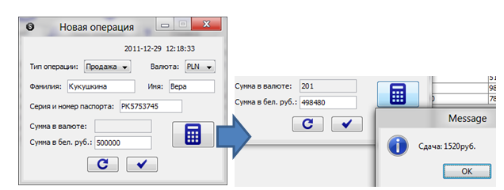

При запуске программы первое, что увидет пользоватль – это приглашение авторизироваться:
Рисунок 1 – Авторизация
После авторизации он увидит главное окно с набором тех или иных возможностей в зависимости от того, кем является пользователь:
Рисунок 2 – Панель управления администратора
Рисунок 3 – Панель управления оператора
Если в программу зашел администратор, он может изменить курсы валют либо добавлять/удалять операторов.
Для настройки курсов валют администратор должен нажать кнопку «Курсы валют». Появится окно со списком валют и их курсами. Для добавления новой сроки нужно нажать «плюс». В таблице отрисуется еще одна строка, в первом поле которой можно выбрать валюту и задать ее курсы:
Рисунок 4 – Изменение курсов валют
Анологичным путем можно изменить уже имеющиеся курсы.
После проезведенных изменений необходимо нажать кнопку сохранения, иначе все изменения не сохранятся.
Также администратор может управлять операторами. Для этого требуется нажать кнопку «Операторы». Появится окно со списком операторов и данными о них. Для добавления нового нужно нажать на «плюс». Нажатие на кнопку вызовет окно в котором нужно ввести данные об операторе:
Рисунок 5 – Диалог добавления нового оператора
По завершении ввода данных нажать «ОК». Новый оператор появится в списке всех операторов.
Оператор, в отличие от администратора, при нажатии на кнопку «Курсы валют» может только просматривать их, кнопок изменения у него нету:
Рисунок 6 – Просмотр курсов валют
Оператор может производить новые операции. Для этого надо нажать кнопку «Новая операция». Появится диалоговое окно, в котором нужно заполнит данные об операции. В зависимости от выбора типа операции активно только одно из полей для ввода суммы, второе поле считается с помощью кнопки:

Рисунок 7 – Подсчет сумм
Далее при нажатии подтверждения добавления операции предыдущий диалог заменяется окном с отчетом о проведенной операции, который можно распечатать:
Рисунок 8 – Итог операции
Как оператор, так и администратор могут производить поиск по операциям по различным критериям. Для этого нужно открыть вкладку «Поиск операций», выбрать критерий поиска и ввести поисковую фразу:
Рисунок 9 – Поиск операций
Также любой из пользователей может распечатать таблицу операций, отображаемых в главном окне в тот момент времени, с помощью кнопки «Печать».